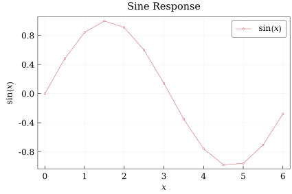

Getting Started
QuickCharts builds figures from a small set of plotting primitives:
Chartcreates a single set of axes.add_line,add_scatter, andadd_baradd data series.Annotationandadd_annotationadd plot-area notes.ChartGridcombines charts into multi-panel figures.savewrites figures to.pdf,.png,.svg, or.ps.
Figure sizes are specified in typographic points. The exported cm constant is provided for convenient centimeter-based sizes.
Chart and ChartGrid can also be displayed inline in rich Julia frontends such as VS Code and notebook environments.
A First Chart
Load the package, prepare data, and create a chart:
using QuickCharts
x = collect(0:0.5:6)
y = sin.(x)
chart = Chart(
size = (15cm, 10cm),
title = "Sine Response",
font_size = 12.0,
background = :white,
xlabel = "`x`",
ylabel = "`sin(x)`",
legend = :top_right,
)Chart(size=425.1968503937008 x 283.46456692913387 pt, title="Sine Response", axes="`x`" vs "`sin(x)`", series=0, annotations=0, legend=:top_right)Add a line series. Series labels appear in the legend; an empty label keeps a series out of the legend.
add_line(chart, x, y; mark = :circle, label = "`sin(x)`")DataSeries(:line, n=13, label="`sin(x)`", style=:solid, mark=:circle, order=1)Export the figure:
save(chart, "getting-started.svg")
QuickCharts renders to .pdf, .png, .svg, and .ps.
Text and Math
Titles, labels, legends, series tags, and annotations can include inline math. Math spans can be delimited with backticks, such as $"`u_x(t)`"$, or with escaped dollar signs in normal Julia strings, such as "\$sigma_n\$" or "\$σ_n\$". Backticks are preferred because they do not need escaping.
math_chart = Chart(
size = (9cm, 6cm),
title = "Response `u_x(t)`",
background = :white,
xlabel = "`t`",
ylabel = "`u_x`",
legend = :top_right,
)
add_line(math_chart, x, exp.(-0.2 .* x) .* sin.(x); label = "`e^(-0.2t) sin(t)`")
save(math_chart, "getting-started-math.svg")The math syntax is Typst-like and supports common expression features, including subscripts, superscripts, fractions, brackets, and bold text. Use parentheses for grouping instead of braces; for example, write $`(a + b)/(c + d)`$ and $`x_(i+1)^2`$ rather than brace-grouped forms. The frac function is not required for fractions, because slash notation can turn grouped expressions into fractions directly.
Colors
Colors can be provided as named symbols, RGB/RGBA tuples, or Color values:
color_chart = Chart(
size = (9cm, 6cm),
title = "Styled Series",
background = :white,
xlabel = "`x`",
ylabel = "`y`",
legend = :bottom_left,
)
add_line(color_chart, x, sin.(x); color = :royal_blue, line_width = 0.9, label = "line")
add_scatter(color_chart, x, cos.(x); color = (0.1, 0.5, 0.2), label = "points")
save(color_chart, "getting-started-colors.pdf")When color = :auto, QuickCharts cycles through its default chart palette.